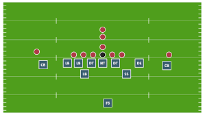
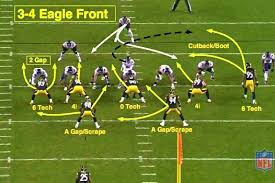

When the other team has the ball, it's the job of the defense to stop them. The goal of the defense is to stop the offense from getting 10 yards in four plays. If they can do this their team gets the ball back. Defenses also try to get the ball through a turnover like a fumble or interception.
Prior to the snap the defense lines up. The middle linebacker generally calls the plays. In the NFL there are all sorts of defensive schemes and formations that teams run throughout the game. They may have extra players in the secondary during passing situations, or put more players up front "in the box" during running situations.
The defense doesn't have to stay set like the offense. They can move around all they want prior to the snap. Defenses take advantage of this to try and confuse the quarterback by moving linemen around or pretending to blitz and then backing off.
The first goal of any defense is to stop the run. All the players work together to do this. The defensive linemen try to take on blockers while they corral the runner. They try to keep the runner from getting around the outside. At the same time the linebackers come up to fill in any holes. When the running back tries to sneak through, the linebackers take him down. If the runner gets past the linemen and linebackers, then it is up to the speedy secondary players to run him down and prevent a long run or a touchdown.
Pass defense is becoming increasingly important as passing has become a huge part of most offenses. Again, all the defensive players must work together to have a good pass defense. The secondary and linebackers cover the receivers while the linemen rush the quarterback. The faster the linemen can rush the quarterback the less time the receivers will have to get open. At the same time, the better the secondary covers the receivers the longer the linemen will have to get to the quarterback.
Tackling is the number one skill all defensive players must have. It doesn't matter how fast you are, how well you shed blockers, or how prepared you are, if you can't tackle, you won't be a good defensive player.
Ethan
Hancock High School
Exploring Computer Science Pilot Course - 2nd Block
Updated: May 2018
URL: efinleyabc.github.io/football4
{kind=link}
When the other team has the ball, it's the job of the defense to stop them. The goal of the defense is to stop the offense from getting 10 yards in four plays. If they can do this their team gets the ball back. Defenses also try to get the ball through a turnover like a fumble or interception. Prior to the snap the defense lines up. The middle linebacker generally calls the plays. In the NFL there are all sorts of defensive schemes and formations that teams run throughout the game. They may have extra players in the secondary during passing situations, or put more players up front "in the box" during running situations. The defense doesn't have to stay set like the offense. They can move around all they want prior to the snap. Defenses take advantage of this to try and confuse the quarterback by moving linemen around or pretending to blitz and then backing off.
The first goal of any defense is to stop the run. All the players work together to do this. The defensive linemen try to take on blockers while they corral the runner. They try to keep the runner from getting around the outside. At the same time the linebackers come up to fill in any holes. When the running back tries to sneak through, the linebackers take him down. If the runner gets past the linemen and linebackers, then it is up to the speedy secondary players to run him down and prevent a long run or a touchdown. Pass defense is becoming increasingly important as passing has become a huge part of most offenses. Again, all the defensive players must work together to have a good pass defense. The secondary and linebackers cover the receivers while the linemen rush the quarterback. The faster the linemen can rush the quarterback the less time the receivers will have to get open. At the same time, the better the secondary covers the receivers the longer the linemen will have to get to the quarterback.
Tackling is the number one skill all defensive players must have. It doesn't matter how fast you are, how well you shed blockers, or how prepared you are, if you can't tackle, you won't be a good defensive player.
Hancock High School
Exploring Computer Science Pilot Course - 2nd Block
Updated: May 2018
URL: efinleyabc.github.io/football4